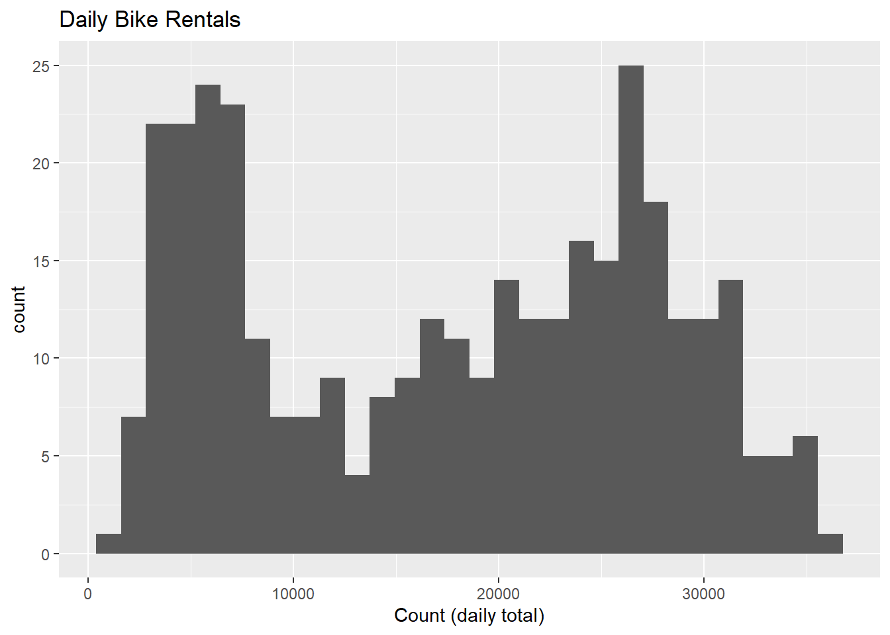
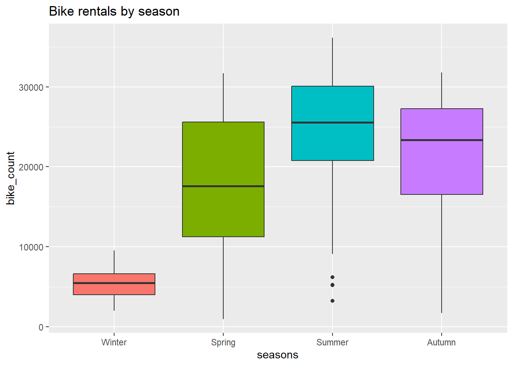

set.seed(2025)
# Core
library(tidyverse)
library(lubridate)
library(janitor)
library(skimr)
# Viz
library(GGally)
# Modeling
library(tidymodels)Homework 8 - Seoul Bike Rentals — MLR with tidymodels (HW)
1) Read the data (with encoding fix) and clean names
url <- "https://www4.stat.ncsu.edu/~online/datasets/SeoulBikeData.csv"
raw_hourly <- readr::read_csv(
url,
locale = readr::locale(encoding = "Latin1") # fixes 'invalid multibyte string'
) %>%
janitor::clean_names()Rows: 8760 Columns: 14
── Column specification ────────────────────────────────────────────────────────
Delimiter: ","
chr (4): Date, Seasons, Holiday, Functioning Day
dbl (10): Rented Bike Count, Hour, Temperature(°C), Humidity(%), Wind speed ...
ℹ Use `spec()` to retrieve the full column specification for this data.
ℹ Specify the column types or set `show_col_types = FALSE` to quiet this message.glimpse(raw_hourly)Rows: 8,760
Columns: 14
$ date <chr> "01/12/2017", "01/12/2017", "01/12/2017", "01/…
$ rented_bike_count <dbl> 254, 204, 173, 107, 78, 100, 181, 460, 930, 49…
$ hour <dbl> 0, 1, 2, 3, 4, 5, 6, 7, 8, 9, 10, 11, 12, 13, …
$ temperature_c <dbl> -5.2, -5.5, -6.0, -6.2, -6.0, -6.4, -6.6, -7.4…
$ humidity_percent <dbl> 37, 38, 39, 40, 36, 37, 35, 38, 37, 27, 24, 21…
$ wind_speed_m_s <dbl> 2.2, 0.8, 1.0, 0.9, 2.3, 1.5, 1.3, 0.9, 1.1, 0…
$ visibility_10m <dbl> 2000, 2000, 2000, 2000, 2000, 2000, 2000, 2000…
$ dew_point_temperature_c <dbl> -17.6, -17.6, -17.7, -17.6, -18.6, -18.7, -19.…
$ solar_radiation_mj_m2 <dbl> 0.00, 0.00, 0.00, 0.00, 0.00, 0.00, 0.00, 0.00…
$ rainfall_mm <dbl> 0, 0, 0, 0, 0, 0, 0, 0, 0, 0, 0, 0, 0, 0, 0, 0…
$ snowfall_cm <dbl> 0, 0, 0, 0, 0, 0, 0, 0, 0, 0, 0, 0, 0, 0, 0, 0…
$ seasons <chr> "Winter", "Winter", "Winter", "Winter", "Winte…
$ holiday <chr> "No Holiday", "No Holiday", "No Holiday", "No …
$ functioning_day <chr> "Yes", "Yes", "Yes", "Yes", "Yes", "Yes", "Yes…2) EDA — types, missingness, factors, rename, subset
# Convert date, set factors, and rename to friendly snake_case
hourly <- raw_hourly %>%
mutate(
date = lubridate::dmy(date), # CSV uses day/month/year
seasons = factor(seasons, levels = c("Winter","Spring","Summer","Autumn")),
holiday = factor(holiday),
functioning_day = factor(functioning_day)
) %>%
rename(
bike_count = rented_bike_count,
temp = temperature_c,
humidity = humidity_percent,
windspeed = wind_speed_m_s,
visibility = visibility_10m,
dew_point_temp = dew_point_temperature_c,
solar_radiation = solar_radiation_mj_m2,
rainfall = rainfall_mm,
snowfall = snowfall_cm
)
# Missingness check
missing_tbl <- hourly %>%
summarise(across(everything(), ~sum(is.na(.)))) %>%
pivot_longer(everything(), names_to = "variable", values_to = "n_missing") %>%
arrange(desc(n_missing))
missing_tbl# A tibble: 14 × 2
variable n_missing
<chr> <int>
1 date 0
2 bike_count 0
3 hour 0
4 temp 0
5 humidity 0
6 windspeed 0
7 visibility 0
8 dew_point_temp 0
9 solar_radiation 0
10 rainfall 0
11 snowfall 0
12 seasons 0
13 holiday 0
14 functioning_day 0# Quick structure / summary
skim(hourly)| Name | hourly |
| Number of rows | 8760 |
| Number of columns | 14 |
| _______________________ | |
| Column type frequency: | |
| Date | 1 |
| factor | 3 |
| numeric | 10 |
| ________________________ | |
| Group variables | None |
Variable type: Date
| skim_variable | n_missing | complete_rate | min | max | median | n_unique |
|---|---|---|---|---|---|---|
| date | 0 | 1 | 2017-12-01 | 2018-11-30 | 2018-06-01 | 365 |
Variable type: factor
| skim_variable | n_missing | complete_rate | ordered | n_unique | top_counts |
|---|---|---|---|---|---|
| seasons | 0 | 1 | FALSE | 4 | Spr: 2208, Sum: 2208, Aut: 2184, Win: 2160 |
| holiday | 0 | 1 | FALSE | 2 | No : 8328, Hol: 432 |
| functioning_day | 0 | 1 | FALSE | 2 | Yes: 8465, No: 295 |
Variable type: numeric
| skim_variable | n_missing | complete_rate | mean | sd | p0 | p25 | p50 | p75 | p100 | hist |
|---|---|---|---|---|---|---|---|---|---|---|
| bike_count | 0 | 1 | 704.60 | 645.00 | 0.0 | 191.00 | 504.50 | 1065.25 | 3556.00 | ▇▃▂▁▁ |
| hour | 0 | 1 | 11.50 | 6.92 | 0.0 | 5.75 | 11.50 | 17.25 | 23.00 | ▇▇▆▇▇ |
| temp | 0 | 1 | 12.88 | 11.94 | -17.8 | 3.50 | 13.70 | 22.50 | 39.40 | ▂▆▆▇▂ |
| humidity | 0 | 1 | 58.23 | 20.36 | 0.0 | 42.00 | 57.00 | 74.00 | 98.00 | ▁▅▇▇▅ |
| windspeed | 0 | 1 | 1.72 | 1.04 | 0.0 | 0.90 | 1.50 | 2.30 | 7.40 | ▇▇▂▁▁ |
| visibility | 0 | 1 | 1436.83 | 608.30 | 27.0 | 940.00 | 1698.00 | 2000.00 | 2000.00 | ▂▂▂▂▇ |
| dew_point_temp | 0 | 1 | 4.07 | 13.06 | -30.6 | -4.70 | 5.10 | 14.80 | 27.20 | ▂▃▇▇▆ |
| solar_radiation | 0 | 1 | 0.57 | 0.87 | 0.0 | 0.00 | 0.01 | 0.93 | 3.52 | ▇▁▁▁▁ |
| rainfall | 0 | 1 | 0.15 | 1.13 | 0.0 | 0.00 | 0.00 | 0.00 | 35.00 | ▇▁▁▁▁ |
| snowfall | 0 | 1 | 0.08 | 0.44 | 0.0 | 0.00 | 0.00 | 0.00 | 8.80 | ▇▁▁▁▁ |
# Subset to functioning days only (per instructions)
hourly_fun <- filter(hourly, functioning_day == "Yes")3) Summarize to daily granularity
daily <- hourly_fun %>%
group_by(date, seasons, holiday) %>%
summarise(
bike_count = sum(bike_count, na.rm = TRUE),
rainfall = sum(rainfall, na.rm = TRUE),
snowfall = sum(snowfall, na.rm = TRUE),
temp = mean(temp, na.rm = TRUE),
humidity = mean(humidity, na.rm = TRUE),
windspeed = mean(windspeed, na.rm = TRUE),
visibility = mean(visibility, na.rm = TRUE),
dew_point_temp = mean(dew_point_temp, na.rm = TRUE),
solar_radiation = mean(solar_radiation, na.rm = TRUE),
.groups = "drop"
)
skim(daily)| Name | daily |
| Number of rows | 353 |
| Number of columns | 12 |
| _______________________ | |
| Column type frequency: | |
| Date | 1 |
| factor | 2 |
| numeric | 9 |
| ________________________ | |
| Group variables | None |
Variable type: Date
| skim_variable | n_missing | complete_rate | min | max | median | n_unique |
|---|---|---|---|---|---|---|
| date | 0 | 1 | 2017-12-01 | 2018-11-30 | 2018-05-28 | 353 |
Variable type: factor
| skim_variable | n_missing | complete_rate | ordered | n_unique | top_counts |
|---|---|---|---|---|---|
| seasons | 0 | 1 | FALSE | 4 | Sum: 92, Win: 90, Spr: 90, Aut: 81 |
| holiday | 0 | 1 | FALSE | 2 | No : 336, Hol: 17 |
Variable type: numeric
| skim_variable | n_missing | complete_rate | mean | sd | p0 | p25 | p50 | p75 | p100 | hist |
|---|---|---|---|---|---|---|---|---|---|---|
| bike_count | 0 | 1 | 17485.31 | 9937.16 | 977.00 | 6967.00 | 18563.00 | 26285.00 | 36149.00 | ▇▃▅▇▃ |
| rainfall | 0 | 1 | 3.58 | 11.79 | 0.00 | 0.00 | 0.00 | 0.50 | 95.50 | ▇▁▁▁▁ |
| snowfall | 0 | 1 | 1.86 | 8.80 | 0.00 | 0.00 | 0.00 | 0.00 | 78.70 | ▇▁▁▁▁ |
| temp | 0 | 1 | 12.78 | 11.72 | -14.74 | 3.30 | 13.74 | 22.59 | 33.74 | ▂▆▆▇▅ |
| humidity | 0 | 1 | 58.17 | 14.87 | 22.25 | 47.58 | 57.17 | 67.71 | 95.88 | ▂▆▇▃▂ |
| windspeed | 0 | 1 | 1.73 | 0.60 | 0.66 | 1.30 | 1.66 | 1.95 | 4.00 | ▅▇▂▁▁ |
| visibility | 0 | 1 | 1434.01 | 491.16 | 214.29 | 1087.04 | 1557.75 | 1874.29 | 2000.00 | ▂▂▃▅▇ |
| dew_point_temp | 0 | 1 | 3.95 | 12.99 | -27.75 | -5.19 | 4.61 | 14.92 | 25.04 | ▂▅▇▇▇ |
| solar_radiation | 0 | 1 | 0.57 | 0.32 | 0.03 | 0.28 | 0.56 | 0.82 | 1.22 | ▇▇▇▇▅ |
Plots and correlations
# Distribution of daily rentals
ggplot(daily, aes(bike_count)) +
geom_histogram(bins = 30) +
labs(title = "Daily Bike Rentals", x = "Count (daily total)")
# Rentals by season
ggplot(daily, aes(seasons, bike_count, fill = seasons)) +
geom_boxplot(show.legend = FALSE) +
labs(title = "Bike rentals by season")
# Weather relationships
ggplot(daily, aes(temp, bike_count)) +
geom_point(alpha = 0.6) +
geom_smooth(method = "lm", se = FALSE) +
labs(title = "Temperature vs rentals")`geom_smooth()` using formula = 'y ~ x'
ggplot(daily, aes(humidity, bike_count)) +
geom_point(alpha = 0.6) +
geom_smooth(method = "lm", se = FALSE) +
labs(title = "Humidity vs rentals")`geom_smooth()` using formula = 'y ~ x'
num_tbl <- daily %>% select(where(is.numeric))
round(cor(num_tbl, use = "pairwise.complete.obs"), 3) bike_count rainfall snowfall temp humidity windspeed
bike_count 1.000 -0.239 -0.265 0.753 0.036 -0.193
rainfall -0.239 1.000 -0.023 0.145 0.529 -0.102
snowfall -0.265 -0.023 1.000 -0.267 0.065 0.021
temp 0.753 0.145 -0.267 1.000 0.404 -0.261
humidity 0.036 0.529 0.065 0.404 1.000 -0.234
windspeed -0.193 -0.102 0.021 -0.261 -0.234 1.000
visibility 0.166 -0.222 -0.102 0.002 -0.559 0.206
dew_point_temp 0.650 0.265 -0.210 0.963 0.632 -0.288
solar_radiation 0.736 -0.323 -0.233 0.550 -0.274 0.096
visibility dew_point_temp solar_radiation
bike_count 0.166 0.650 0.736
rainfall -0.222 0.265 -0.323
snowfall -0.102 -0.210 -0.233
temp 0.002 0.963 0.550
humidity -0.559 0.632 -0.274
windspeed 0.206 -0.288 0.096
visibility 1.000 -0.154 0.271
dew_point_temp -0.154 1.000 0.383
solar_radiation 0.271 0.383 1.0004) Split data (75/25, stratified by season)
set.seed(2025)
split_obj <- rsample::initial_split(daily, prop = 0.75, strata = seasons)
train <- rsample::training(split_obj)
test <- rsample::testing(split_obj)
set.seed(2025)
cv10 <- rsample::vfold_cv(train, v = 10, strata = seasons)5) Recipes
Recipe 1: - drop date from predictors (keep as ID) - derive weekday/weekend factor from date - dummy encode categoricals - standardize numerics
Recipe 2: Recipe 1 + interactions: seasons×holiday, seasons×temp, temp×rainfall
Recipe 3: Recipe 2 + quadratic terms for the continuous numeric predictors
base_recipe <- function(dat) {
recipe(bike_count ~ ., data = dat) %>%
update_role(date, new_role = "ID") %>%
# Create day-of-week and then a factor as required
step_date(date, features = "dow", label = TRUE) %>%
step_mutate(
day_type = factor(
if_else(as.character(date_dow) %in% c("Saturday","Sunday"),
"weekend", "weekday")
)
) %>%
# Turn the factor into a robust numeric binary and drop the factor & helper
step_mutate(is_weekend = if_else(day_type == "weekend", 1, 0)) %>%
step_rm(day_type, date_dow) %>%
# Dummies for other categoricals only
step_dummy(all_nominal_predictors(), one_hot = TRUE) %>%
step_zv(all_predictors()) %>%
# Normalize numerics (or use center+scale if your recipes version needs it)
step_normalize(all_numeric_predictors())
# step_center(all_numeric_predictors()) %>% step_scale(all_numeric_predictors())
}
rec1 <- base_recipe(train)
rec2 <- base_recipe(train) %>%
step_interact(terms = ~ starts_with("seasons_"):starts_with("holiday_") +
starts_with("seasons_"):temp +
temp:rainfall)
# Apply poly ONLY to continuous predictors (keep this poly fix)
rec3 <- base_recipe(train) %>%
step_interact(terms = ~ starts_with("seasons_"):starts_with("holiday_") +
starts_with("seasons_"):temp +
temp:rainfall) %>%
step_poly(temp, humidity, windspeed, visibility, dew_point_temp,
solar_radiation, rainfall, snowfall, degree = 2)6) Linear model + workflows
lm_spec <- linear_reg() %>% set_engine("lm")
wf1 <- workflow() %>% add_model(lm_spec) %>% add_recipe(rec1)
wf2 <- workflow() %>% add_model(lm_spec) %>% add_recipe(rec2)
wf3 <- workflow() %>% add_model(lm_spec) %>% add_recipe(rec3)7) 10-fold CV and model selection (lowest RMSE)
metrics <- yardstick::metric_set(rmse, rsq)
set.seed(2025)
res1 <- fit_resamples(wf1, resamples = cv10, metrics = metrics,
control = control_resamples(save_pred = TRUE))→ A | warning: prediction from rank-deficient fit; consider predict(., rankdeficient="NA")There were issues with some computations A: x1There were issues with some computations A: x3There were issues with some computations A: x5There were issues with some computations A: x7There were issues with some computations A: x9There were issues with some computations A: x10set.seed(2025)
res2 <- fit_resamples(wf2, resamples = cv10, metrics = metrics,
control = control_resamples(save_pred = TRUE))→ A | warning: prediction from rank-deficient fit; consider predict(., rankdeficient="NA")There were issues with some computations A: x1There were issues with some computations A: x2There were issues with some computations A: x4There were issues with some computations A: x6There were issues with some computations A: x8There were issues with some computations A: x10
There were issues with some computations A: x10set.seed(2025)
res3 <- fit_resamples(wf3, resamples = cv10, metrics = metrics,
control = control_resamples(save_pred = TRUE))→ A | warning: prediction from rank-deficient fit; consider predict(., rankdeficient="NA")There were issues with some computations A: x1There were issues with some computations A: x2There were issues with some computations A: x4There were issues with some computations A: x5There were issues with some computations A: x7There were issues with some computations A: x9There were issues with some computations A: x10
There were issues with some computations A: x10cv_summary <- bind_rows(
collect_metrics(res1) %>% mutate(model = "Recipe 1"),
collect_metrics(res2) %>% mutate(model = "Recipe 2"),
collect_metrics(res3) %>% mutate(model = "Recipe 3")
) %>% filter(.metric == "rmse") %>% arrange(mean)
cv_summary# A tibble: 3 × 7
.metric .estimator mean n std_err .config model
<chr> <chr> <dbl> <int> <dbl> <chr> <chr>
1 rmse standard 3003. 10 243. pre0_mod0_post0 Recipe 3
2 rmse standard 3192. 10 239. pre0_mod0_post0 Recipe 2
3 rmse standard 4193. 10 217. pre0_mod0_post0 Recipe 1best_model_name <- cv_summary$model[1]
best_model_name[1] "Recipe 3"8) Final fit on training data and test RMSE
best_wf <- switch(best_model_name,
"Recipe 1" = wf1,
"Recipe 2" = wf2,
"Recipe 3" = wf3)
final_fit <- last_fit(best_wf, split = split_obj, metrics = metrics)→ A | warning: prediction from rank-deficient fit; consider predict(., rankdeficient="NA")There were issues with some computations A: x1
There were issues with some computations A: x1# Test-set RMSE and R^2
collect_metrics(final_fit)# A tibble: 2 × 4
.metric .estimator .estimate .config
<chr> <chr> <dbl> <chr>
1 rmse standard 3611. pre0_mod0_post0
2 rsq standard 0.874 pre0_mod0_post09) Final model coefficients (tidy)
final_model <- extract_fit_parsnip(final_fit$.workflow[[1]])
broom::tidy(final_model, conf.int = TRUE) %>%
arrange(desc(abs(estimate))) %>%
head(30)# A tibble: 30 × 7
term estimate std.error statistic p.value conf.low conf.high
<chr> <dbl> <dbl> <dbl> <dbl> <dbl> <dbl>
1 dew_point_temp_poly… 218202. 81355. 2.68 7.83e- 3 57925. 378480.
2 temp_poly_1 -156036. 69272. -2.25 2.52e- 2 -292509. -19563.
3 humidity_poly_1 -69789. 23982. -2.91 3.96e- 3 -117037. -22541.
4 temp_poly_2 -48427. 18083. -2.68 7.93e- 3 -84053. -12801.
5 solar_radiation_pol… 44897. 5776. 7.77 2.38e-13 33518. 56276.
6 rainfall_poly_1 -30619. 8175. -3.75 2.27e- 4 -46724. -14513.
7 (Intercept) 19203. 1584. 12.1 1.37e-26 16082. 22324.
8 rainfall_poly_2 17061. 3531. 4.83 2.44e- 6 10104. 24017.
9 dew_point_temp_poly… 14243. 12567. 1.13 2.58e- 1 -10516. 39001.
10 seasons_Summer 6198. 970. 6.39 8.96e-10 4286. 8109.
# ℹ 20 more rowsAppendix — session info
sessionInfo()R version 4.4.2 (2024-10-31 ucrt)
Platform: x86_64-w64-mingw32/x64
Running under: Windows 11 x64 (build 26200)
Matrix products: default
locale:
[1] LC_COLLATE=English_United States.utf8
[2] LC_CTYPE=English_United States.utf8
[3] LC_MONETARY=English_United States.utf8
[4] LC_NUMERIC=C
[5] LC_TIME=English_United States.utf8
time zone: America/New_York
tzcode source: internal
attached base packages:
[1] stats graphics grDevices utils datasets methods base
other attached packages:
[1] yardstick_1.3.2 workflowsets_1.1.1 workflows_1.3.0 tune_2.0.1
[5] tailor_0.1.0 rsample_1.3.1 recipes_1.3.1 parsnip_1.3.3
[9] modeldata_1.5.1 infer_1.0.9 dials_1.4.2 scales_1.4.0
[13] broom_1.0.10 tidymodels_1.4.1 GGally_2.4.0 skimr_2.2.1
[17] janitor_2.2.1 lubridate_1.9.4 forcats_1.0.0 stringr_1.5.1
[21] dplyr_1.1.4 purrr_1.2.0 readr_2.1.5 tidyr_1.3.1
[25] tibble_3.2.1 ggplot2_4.0.0 tidyverse_2.0.0
loaded via a namespace (and not attached):
[1] tidyselect_1.2.1 timeDate_4051.111 farver_2.1.2
[4] clock_0.7.3 S7_0.2.0 fastmap_1.2.0
[7] digest_0.6.37 rpart_4.1.23 timechange_0.3.0
[10] lifecycle_1.0.4 survival_3.7-0 magrittr_2.0.3
[13] compiler_4.4.2 rlang_1.1.6 tools_4.4.2
[16] utf8_1.2.4 yaml_2.3.10 data.table_1.17.8
[19] knitr_1.50 labeling_0.4.3 htmlwidgets_1.6.4
[22] curl_7.0.0 bit_4.6.0 DiceDesign_1.10
[25] repr_1.1.7 RColorBrewer_1.1-3 withr_3.0.2
[28] nnet_7.3-19 grid_4.4.2 sparsevctrs_0.3.4
[31] future_1.67.0 globals_0.18.0 MASS_7.3-61
[34] cli_3.6.5 crayon_1.5.3 rmarkdown_2.29
[37] generics_0.1.3 rstudioapi_0.17.1 future.apply_1.20.0
[40] tzdb_0.5.0 splines_4.4.2 parallel_4.4.2
[43] base64enc_0.1-3 vctrs_0.6.5 hardhat_1.4.2
[46] Matrix_1.7-1 jsonlite_2.0.0 hms_1.1.3
[49] bit64_4.6.0-1 listenv_0.10.0 gower_1.0.2
[52] glue_1.8.0 parallelly_1.45.1 ggstats_0.11.0
[55] codetools_0.2-20 stringi_1.8.7 gtable_0.3.6
[58] GPfit_1.0-9 pillar_1.10.1 furrr_0.3.1
[61] htmltools_0.5.8.1 ipred_0.9-15 lava_1.8.2
[64] R6_2.6.1 lhs_1.2.0 vroom_1.6.5
[67] evaluate_1.0.4 lattice_0.22-6 backports_1.5.0
[70] snakecase_0.11.1 class_7.3-22 Rcpp_1.0.14
[73] nlme_3.1-166 prodlim_2025.04.28 mgcv_1.9-1
[76] xfun_0.53 pkgconfig_2.0.3